WIN282: Click Navigation Changes
WinkBeds Shop page · Convert exp 100350640 · mobile only · preview links · tested 2026-10-05
Expected behaviour (from the client video)
| Item | Should scroll to | Code target |
|---|---|---|
| Rated 4.8 stars | "What Real Winkbed Owners Say" | #shopify-section-testimonials |
| Made in the U.S.A. | Made in U.S.A. / "Before Your WinkBed Arrives…" | #shopify-section-shop-hi-touch |
| 120-Night Trial | "Our 120-Night, Risk-Free Trial…" | #shopify-section-shop-the-winkbed-warranty |
| Lifetime Warranty | "Our lifetime durability promise (and warranty)" | #shopify-section-shop-promise |
| Free Shipping & Returns | FAQ "Can I return or exchange…", opened | FAQ concertina, opened + category switch |
| 100+ Showrooms | Locations section with map (lives in another test) | bottom of #shopify-section-shop-frames − 100px |
Client: "we really want the section just to be kind of anchored at the top of the viewport."
Results
| # | Check | Pixel 5 (Chromium) | iPhone 12 (WebKit) |
|---|---|---|---|
| TC-01 | Copy underlined, icons not underlined, pointer cursor | PASS | PASS |
| TC-02 | Control: same grid, no underline, tap does not scroll | PASS | n/a |
| TC-03 | Goals: "any benefit" + per-item goal, once per click, same IDs in both arms | PASS 6/6 | PASS |
| TC-04 | Rating → reviews section | 2/2 | 2/2 |
| TC-05 | USA → Made in U.S.A. | 2/2 on screen, ~480px down | 2/2 |
| TC-06 | Trial → trial section | 0/2 (overshoots) | 1/2 (once landed in FAQ) |
| TC-07 | Warranty → warranty section | 1/2 | 0/2 (store list / trial section) |
| TC-08 | Shipping → FAQ opened on "Can I return or exchange" | opens 2/2, title 390–480px down | opens 2/2, anchored 1/2 |
| TC-09 | Showrooms → "Try The WinkBed In Person" | 2/2 | 2/2 |
| TC-10 | Showrooms when WIN248 section is absent | lands on Trial section | n/a |
| TC-11 | Grid at 320 / 360px | clipped, same in control | n/a |
| TC-12 | No JS errors from cre-t-282 | PASS | PASS |
Bugs
BUG-01 · High Trial / Warranty (and the Shipping FAQ) land in the wrong place.
scrollToEl() calculates the target position once, when the item is clicked. Content above those sections keeps changing height for several seconds after load, so by the time the scroll ends the target has moved. A height probe (Pixel 5) showed:
.cre-t-248-section(WIN248 "Try The WinkBed In Person" store list): 223 → 7,449 → 1,045px#shopify-section-order-the-winkbed(Buy Box): 691 → 2,539px#shopify-section-faq-content: 3,530 → 1,999px
As a result, the Trial section's top moved between 15,216 and 24,353px during load. Sections above the store list (Rating, USA) aren't affected, which is why they pass. Showrooms already has a re-check (settle()), but no other item does.
Fix: apply the same re-check to every item: after the smooth scroll, re-measure the target and correct the scroll once or twice until it holds still. Another option is scrollIntoView() with a scroll-margin-top, re-applied after the scrollend event.
BUG-02 · Low (client answered 2026-10-05) Showrooms depends on WIN248.
Update: the client restarted WIN248, and it now runs as a deployment for all visitors. Its section loads with the page (the trigger that waited for a scroll was removed), so the Showrooms scroll has a target for everyone. The client approved /pages/store-locator as the fallback if there are issues. The FAQ handling for Free Shipping & Returns was also confirmed. Still recommended: target .cre-t-248-section directly, and go to /pages/store-locator when it's missing, so the link never lands on the Trial section if WIN248 is ever switched off. Original finding below.
The locations section only exists for visitors in WIN248's variation. The code doesn't target it directly: it scrolls to the bottom of #shopify-section-shop-frames minus 100px, which happens to be where WIN248 inserts its section. With .cre-t-248-section removed, Showrooms landed on "Our 120-Night, Risk-Free Trial…". So WIN248-control visitors get sent to the Trial section.
Fix / question: target .cre-t-248-section directly. The client needs to say what should happen when it's missing (for example: link to the showrooms page, hide the link, or leave the item unlinked).
Notes (not WIN282 regressions)
NOTE-01 At ≤360px the grid is a fixed 397px wide (2×180px + gap + padding), so the left icons and right text are clipped ("Lifetime Warrant", "Made in the U.S.A"). The control behaves the same, so this comes from WIN262 V2. Worth fixing anyway, because 360px is a common Android width.
NOTE-02 "Free Shipping & " has a trailing space inside the underline, caused by white-space: pre-wrap. Cosmetic.
NOTE-03 The copy differs from the WIN262 Figma ("Rated 4.8 stars" vs "4.8-Star Rating", "Made in the U.S.A." vs "Made in the USA"). The control is identical, so this is out of WIN282 scope.
NOTE-04 customGoal() also lists a "financing available" goal that has no matching item in the grid. It's harmless dead entry.
Testing note The "We get it…" timed modal (#shopify-section-timedModal) opened during runs and blocked taps; it was dismissed or hidden for testing. Headless WebKit taps don't register on this page (constant micro-relayout), so the iPhone landing checks used DOM clicks plus an elementFromPoint check confirming nothing covers the labels.
Screenshots
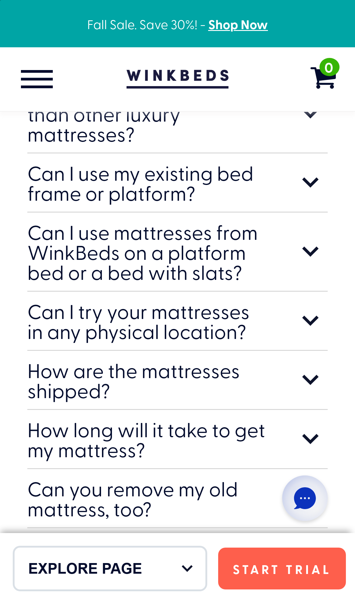
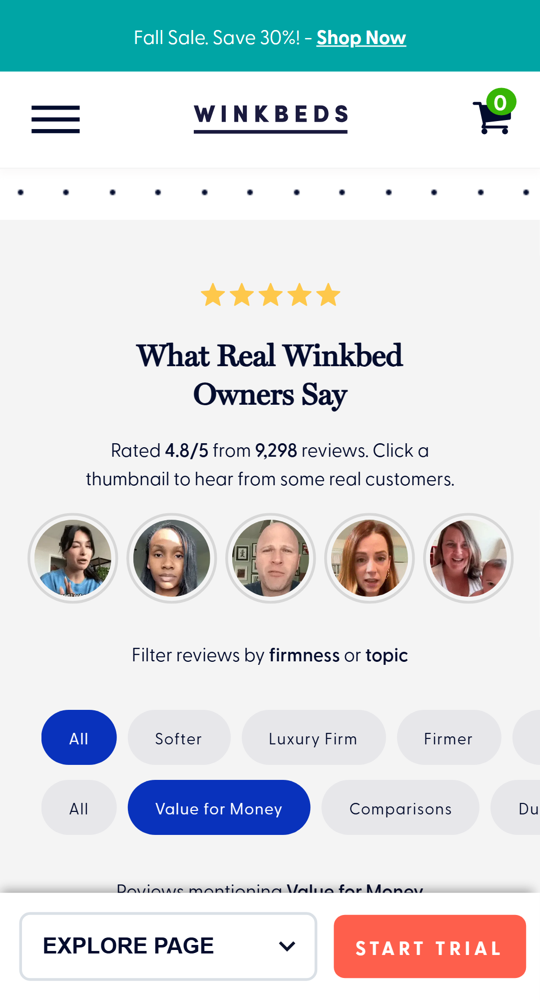
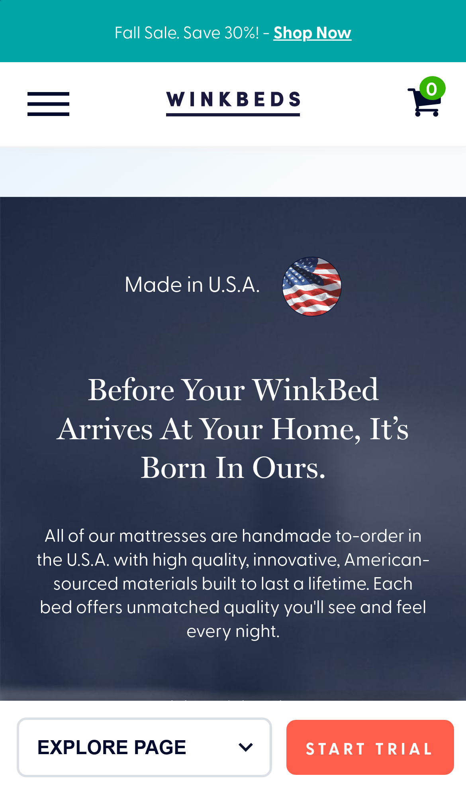
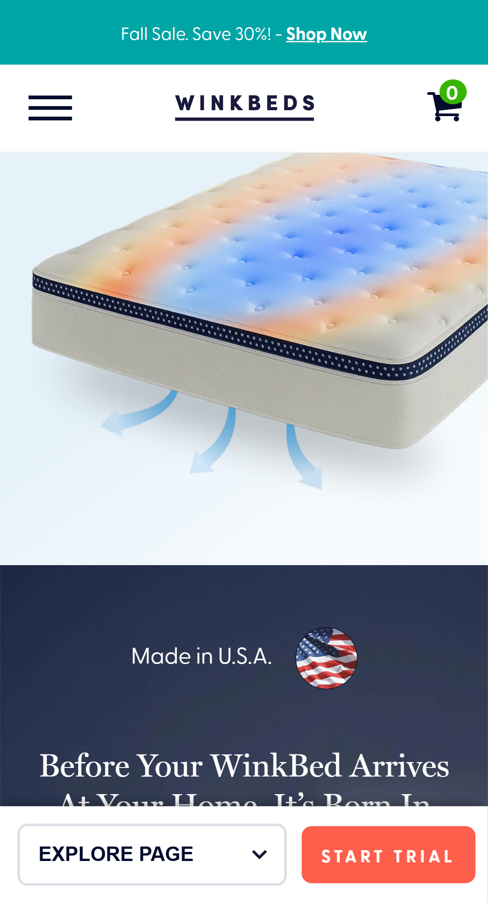
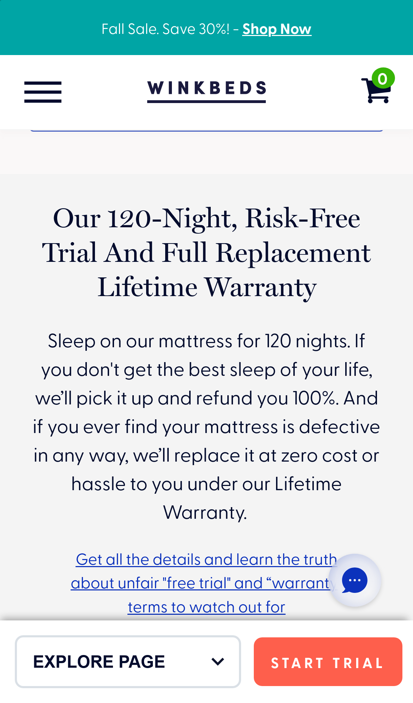
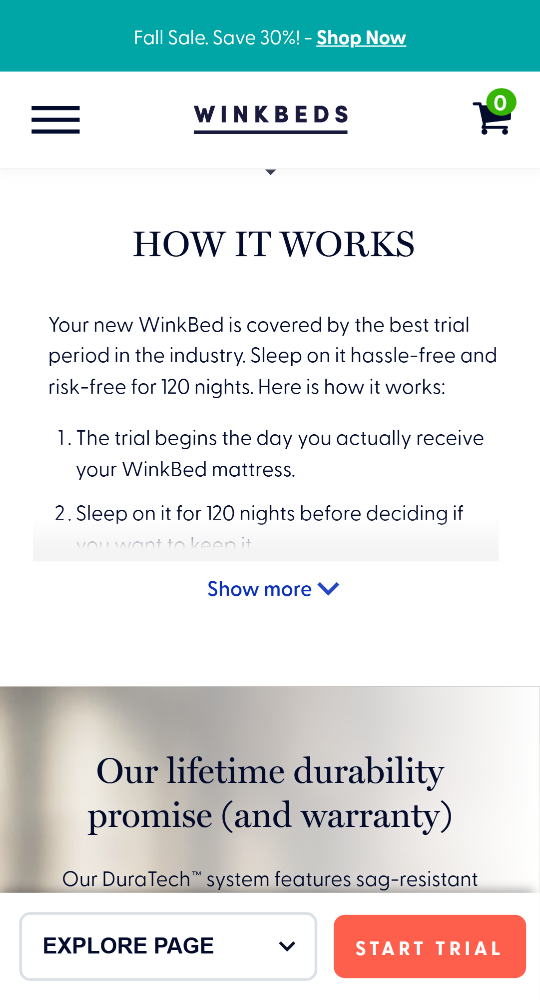
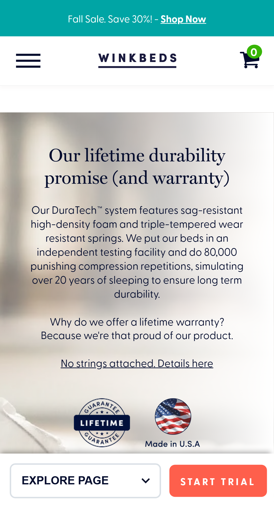
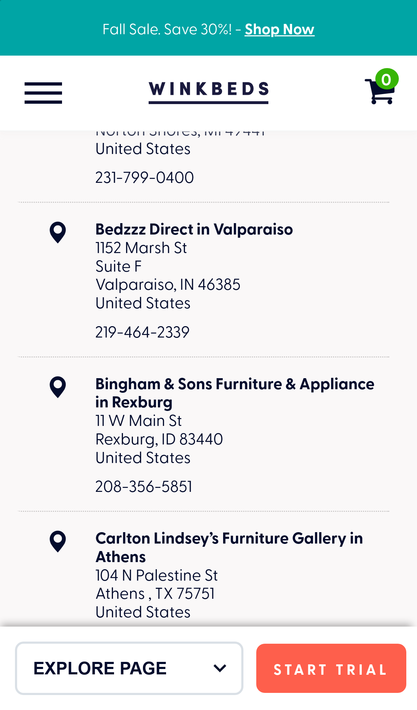
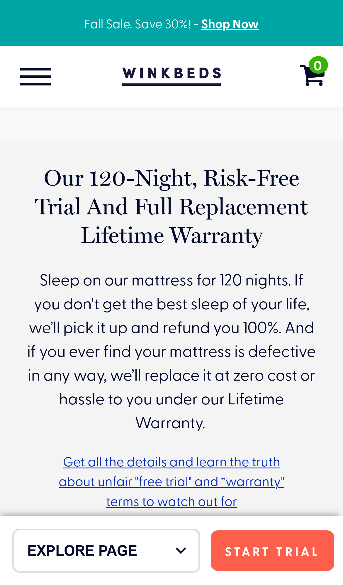
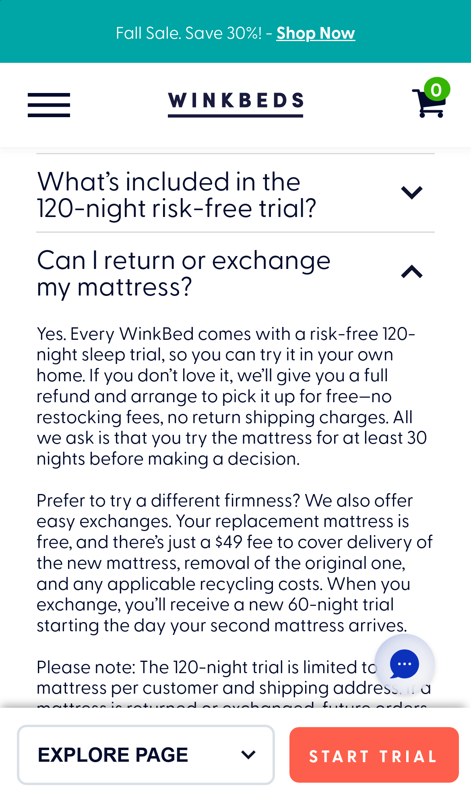
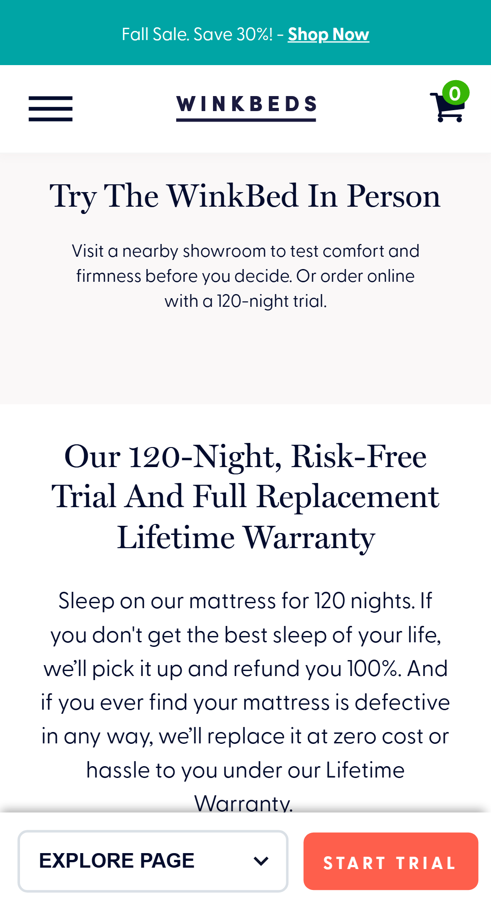
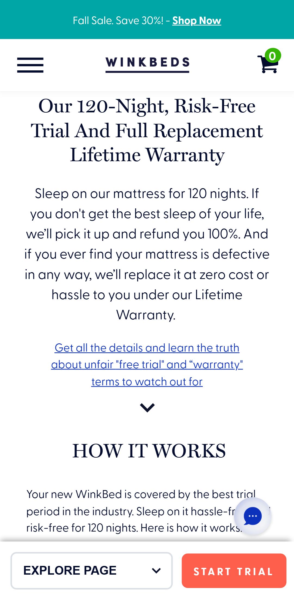
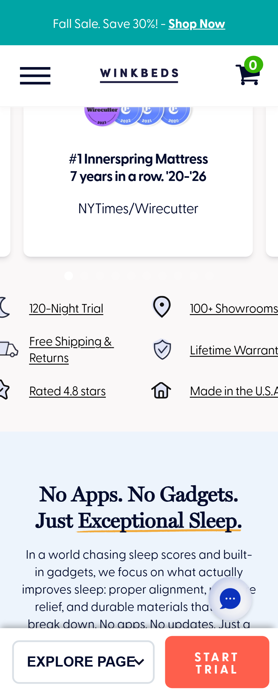
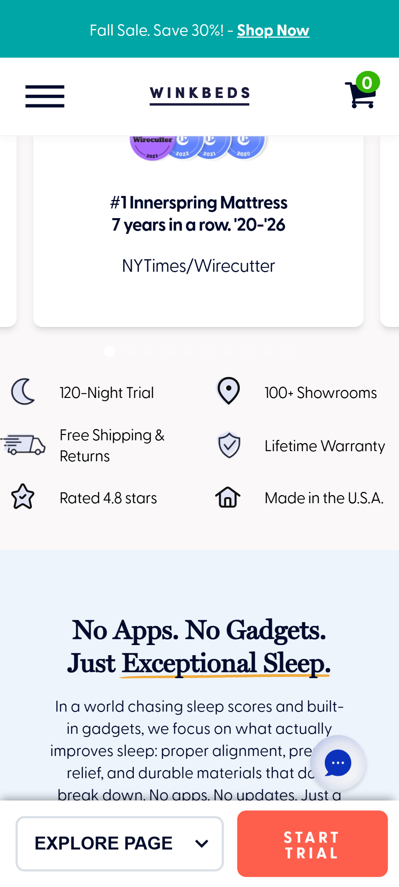